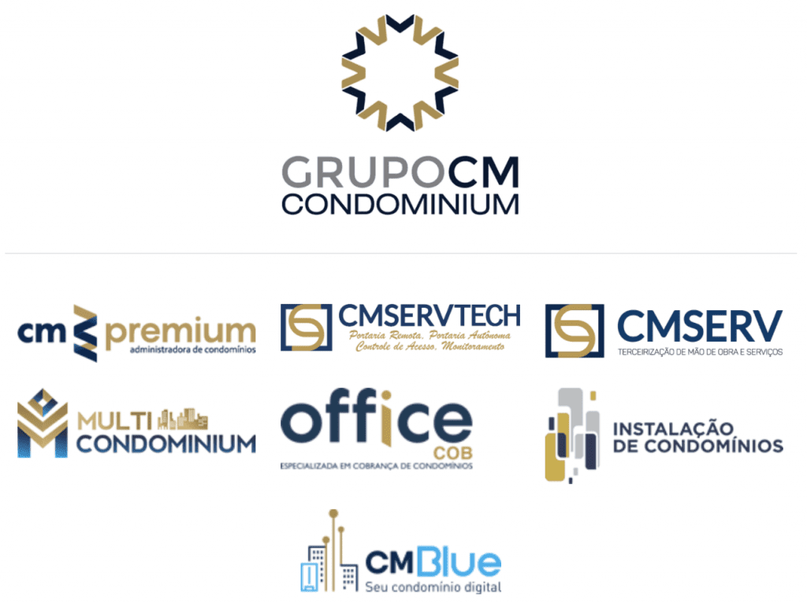
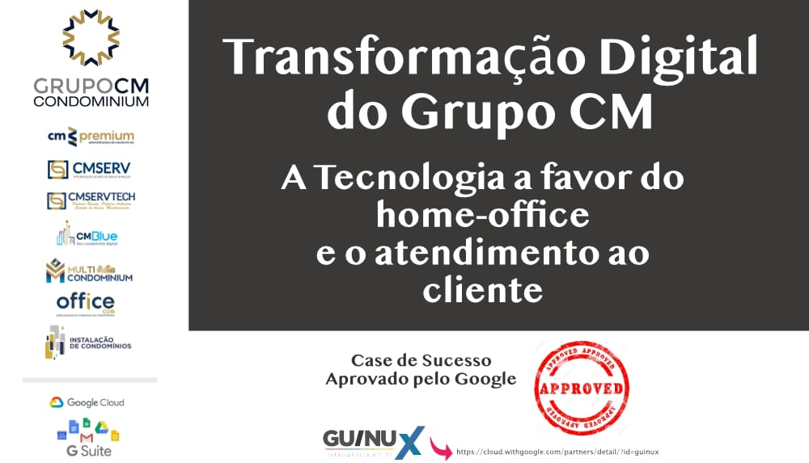

Há 20 anos atuando com tradição e experiência no mercado, o Grupo CM é formado pelas empresas CMPremium, MultiCondominium, OfficeCob, CMBaiak Advogados, CMServ Terceirização de Mão de

obra, CMServ Tech, CMBlue e Instalação de Condomínios. Com a parceria tecnológica da Guinux, o Grupo CM está sendo constantemente atualizado do que acontece no mundo tecnológico, podendo adaptar essas transformações digitais para a sua realidade. As empresas do grupos também contam com os serviços de TI Gerenciada, Help Desk e um apoio contínuo no processo de inovação.
Com o Google Cloud Workspace consolidamos informações de 7 empresas do grupo em um ambiente que permitiu fácil acesso , mobilidade, segurança e alinhamento com a LGPD. Implementamos ferramentas de colaboração e comunicação que otimizaram a produtividade de todos os times das diversas empresas em um ambiente único, permitindo a adoção do Home Office com muita tranquilidade.
Um outro ponto importante a mencionar, eram os inúmeros problemas diários de TI e a falta de um apoio especializado, resolvido facilmente com a contratação da TI Gerenciada e Help Desk da Guinux.
“Nossos funcionários contam com todo suporte especializado da Guinux , qualquer problema é resolvido sempre muito rápido e com grande eficácia” Beatriz Mello – Diretora Executiva do Grupo CM
Com a contínua sustentação tecnológica da Guinux, houve um significativo ganho de produtividade, permitindo a CM focar em novos projetos e negócios , fato comprovado com as incríveis e modernas soluções condominiais lançadas recentemente pelo grupo.

https://cloud.withgoogle.com/partners/detail/?id=guinux
Relacionado:
Quer saber mais, como o Grupo CM está garantindo suas atividades em tempos de pandemia ?